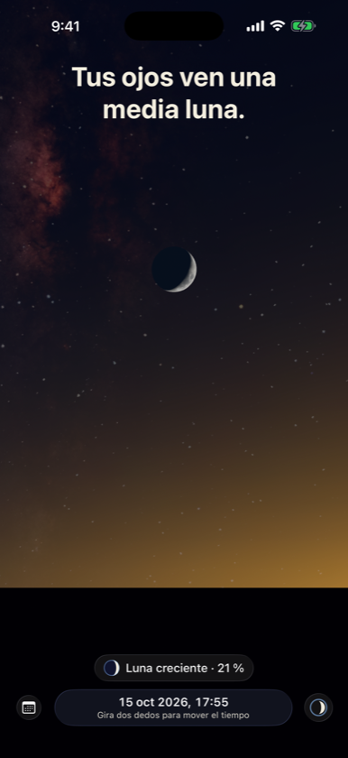
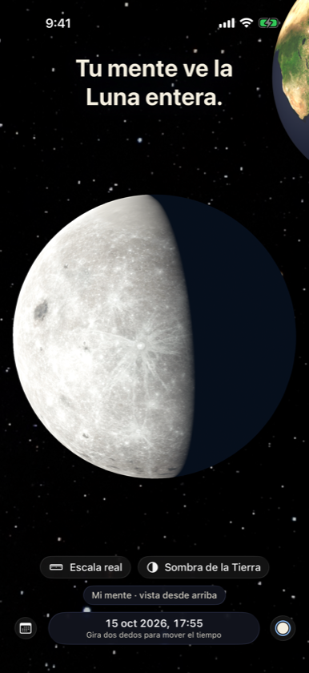
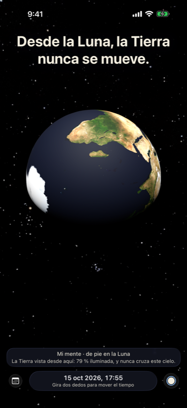

Tus ojos ven una media luna. Tu mente sabe que la Luna nunca lo es. Two Egoes es un cielo continuo donde puedes estar en cualquier lugar: tu horizonte, la Luna, el Sol o muy por encima de todo.



De pie en la Luna
La Tierra queda quieta en el cielo lunar, con fases opuestas a las de la Luna.
¿Por qué no cada mes?
La sombra de la Tierra a la distancia de la Luna, en proporciones reales, y la inclinación de 5° que decide cada eclipse.
Nada está quieto
Sentado en tu silla recorres unos 30 km alrededor del Sol cada segundo.